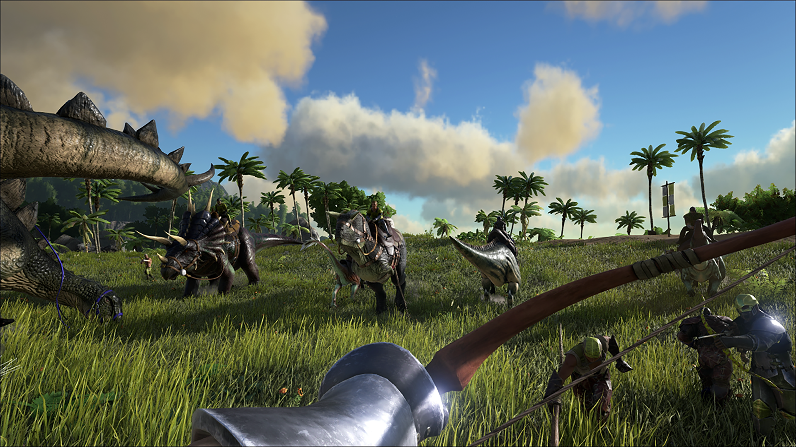
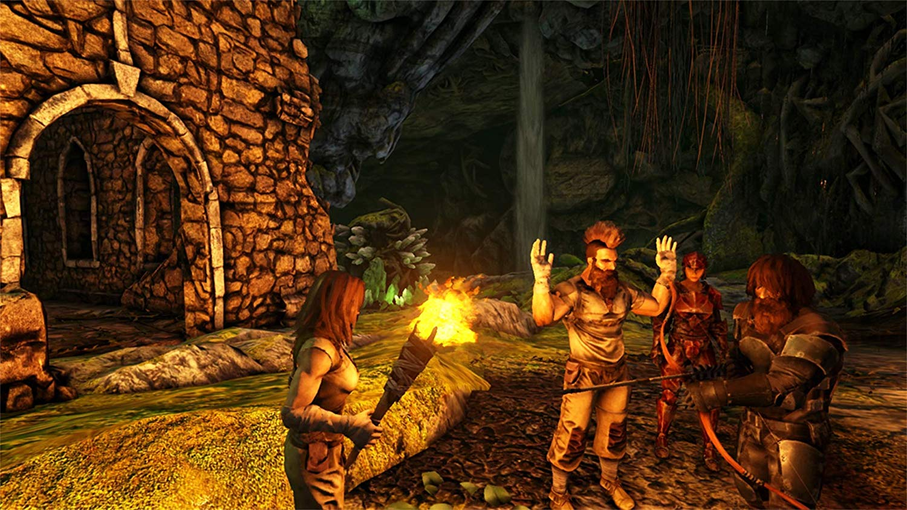
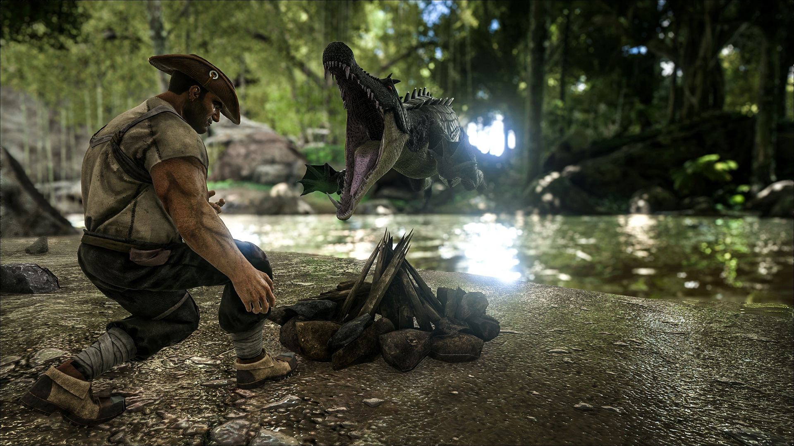
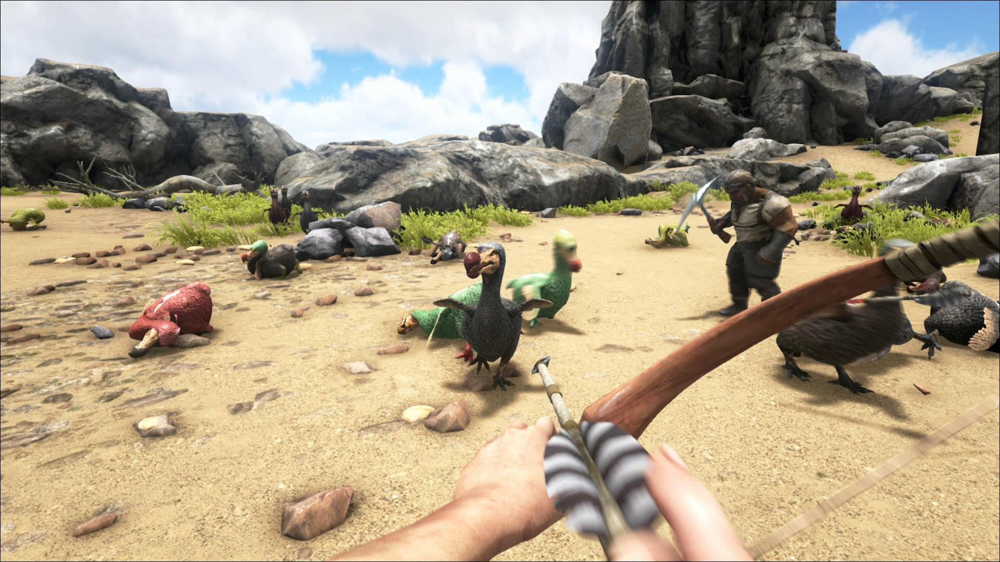
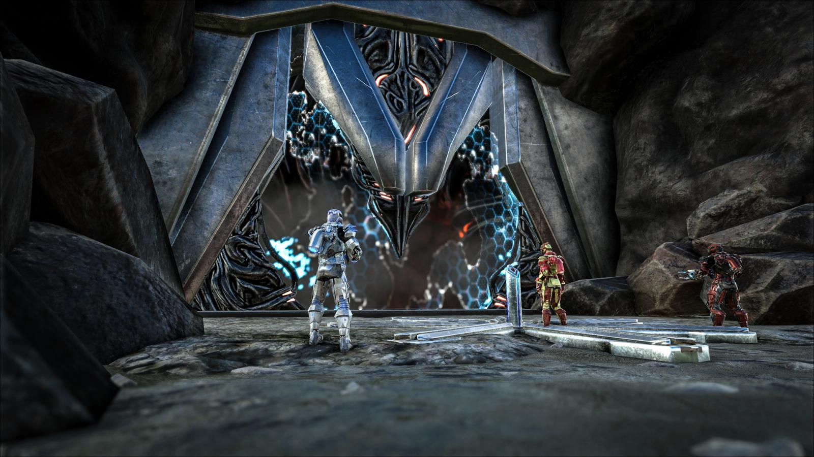
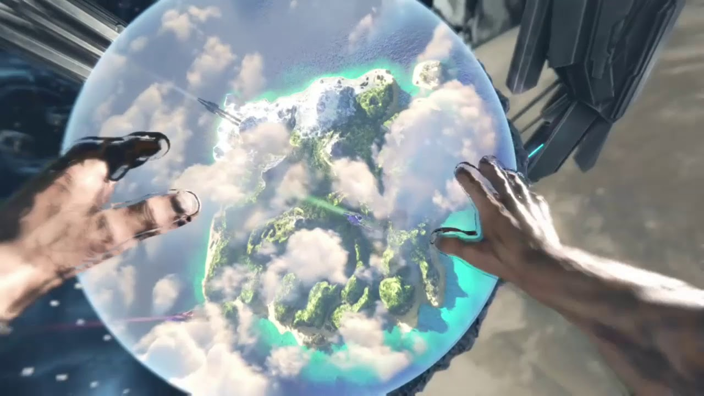

Descripción
Ark es un juego sobre supervivencia en el que la tierra se convierte inhabitable, la raza que prevalece en la Tierra es la raza humana con implantes cibernéticos esto les dan una especie de poderes sobrenaturales y ciertos humanos deciden crear un sistema de satélites en el que comparten datos, la raza humana se está extinguiendo y los humanos que crearon la red de satélites deciden usarlas para crear islas de pruebas, que es donde nos encontramos nosotros, los humanos elegidos aparece como homosapien en la Tierra sin recordar nada, con un implante en el brazo para realizar pruebas y para sobrevivir a los dinosaurios que no son los que conocemos comúnmente si no son 20 veces la generación de estos, también tendremos que resistir a otros seres humanos, el objetivo final es el de realizar toda una serie de pruebas para poder demostrar que la raza humana es capaz de sobrevivir en el estado actual de la Tierra.
Imágenes




